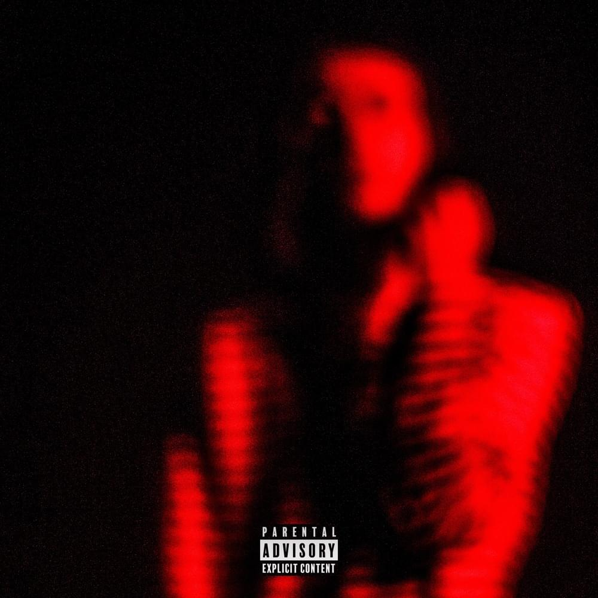

| Title | Year | Info |
| History | 2002 | 20 yers |
| Childhood | 2010 | School time |
| Feats | 2022 | Next tap |
| NO COMMERCIAL LYRICS(2022) | 2022 | Swag |
Moscow Politech Group 211-362
Made by:
Belogortsev Sergey
Sex: male
Age: 20
Date of Birth: 17.02.2002
Place of birth: Moscow
Enthusiasm: rapper
History
In short, History is unhinged. Heroinwater was born on 11/01/2002 in St. Petersburg.
The boy's childhood declined from the very beginning of his life. His parents due to a drug overdose when the boy was about four months old.
In short, History is unhinged. Heroinwater was born on 11/01/2002 in St. Petersburg.
The boy's childhood declined from the very beginning of his life. His parents due to a drug overdose when the boy was about four months old.
Heroin water observed in an orphanage. In the orphanage, he became friends with the boy Budya. At the age of six, he consumes at school with a buddha.
They often skipped classes, but attended music lessons with pleasure.
childhood

Childhood Heroinwater graduates from high school. Suddenly, something clicked in his head and he wanted to "write beats".
Famous rappers from Russia noticed him and started buying beats from him.
He understood that there was no turning back and that he needed to develop further.
Childhood Heroinwater graduates from high school. Suddenly, something clicked in his head and he wanted to "write beats".
Famous rappers from Russia noticed him and started buying beats from him.
He understood that there was no turning back and that he needed to develop further.
He wrote his first album at the age of 18, which became the most listened to on music platforms and took first place in the charts among Russian rappers.
Heroinwater is 19 years old, he wanted to learn how to shoot with weapons. Having received health certificates, he enters a shooting school in Yekaterinburg.
Feats
Feats In 2022 recorded a major hit with SODA LUV - KARINA
In my opinion this is a very big push forward from now on the artist will be
able to do collaborations with other artists.
Feats In 2022 recorded a major hit with SODA LUV - KARINA
In my opinion this is a very big push forward from now on the artist will be
able to do collaborations with other artists.
This album is best known for the track “НИЧЕГО ЛИЧНОГО 2”
and for good reason. Few songs have been ahead of their
time quite like this one. Other highlights include “Ghosttown”
featuring Travi$ Scott from the days where he still sported a
dollar sign in his name, and “Monster”
NO COMMERCIAL LYRICS(2022)
NO COMMERCIAL LYRICS is another project on the shorter side,
in which Heroin worked closely with producer Wex & Lawzy
to create a gloomy spectacle that evokes images of a
ravaged Gleba walking through desolate paths and
post-apocalyptic landscapes.